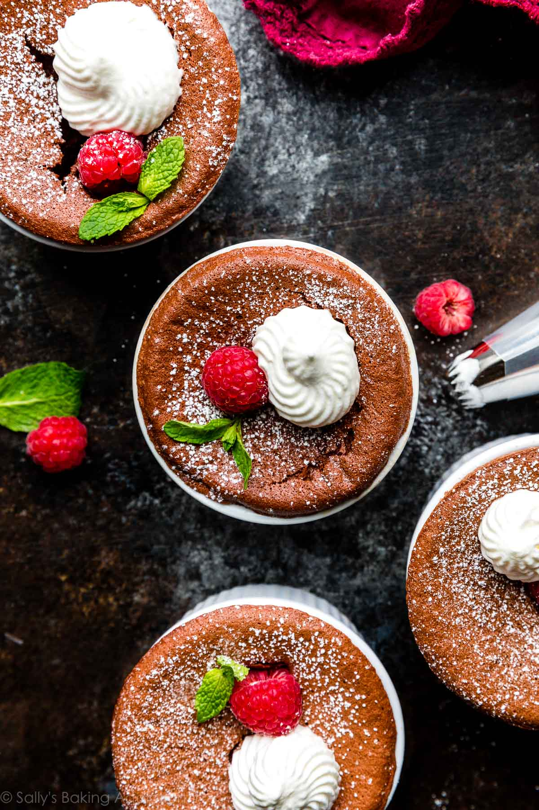

Chocolate Souffle

Description
You have had your meal and your sides and at last come to that capstone of the evening,
a sweet treat to end your day: dessert. You will want something not as robust as the meal
itself, yet still bold in its flavor profile. Consider the classic chocolate souffle.
It does take some skill to achieve a souffle's signature 'rise' and texture, but it is
still well within the capabilities of even an amateur cook. The trick lies in the proper
creation and folding of a meringue and a chocolate mixture. The result is well-worth the
effort, an almost-irrestistable treat for yourself, and a great gift for family and friends.
Ingredients
- 5 Tablespoons unsalted butter
- 4 ounce semi-sweet choclate
- 3 large eggs
- 1 teaspoon vanilla extract
- 1/8 teaspoon salt
- 1/8 teaspoon cream of tartar
- 4 1/3 Tablespoons granulated sugar
Instructions
- Melt 4 Tablespoons butter and chocolate (chopped) in the microwave. Do so
in 20 second increments, stirring in between, until completely melted and
combined.
- Whisk egg yolks, vanilla extract, and salt into chcolate mixture. Set
aside.
- Using a mixer, beat egg whites and cream of tartar on high speed until soft
peaks form. Add in 3 Tablespoons sugar 1 Tablespoon at a time and mix for
5 seconds in between. Then continue to mix until stiff peaks form.
- Fold the egg white/meringue mixutre into the chcolate mixture in thirds.
Refrigerate.
- Place an oven rack at the bottom third of your oven. Preheat to 400 degrees.
- Brush 4 ramekins with the remaining butter (softened) Sprinkle with the rest
of the sugar. Rotate to thoroughly coat the butter with the sugar and discard
the excess
- Pour batter into ramekins. Run a spatula around the rims of the ramekins,
creating a channel between the batter and the rims of the ramekins. Place
ramekins on a baking sheet.
- Reduce oven temp to 375. Bake for 13-14 minutes, until the edges are set,
and the center barely jiggles when tapping the pan. Serve immediately.